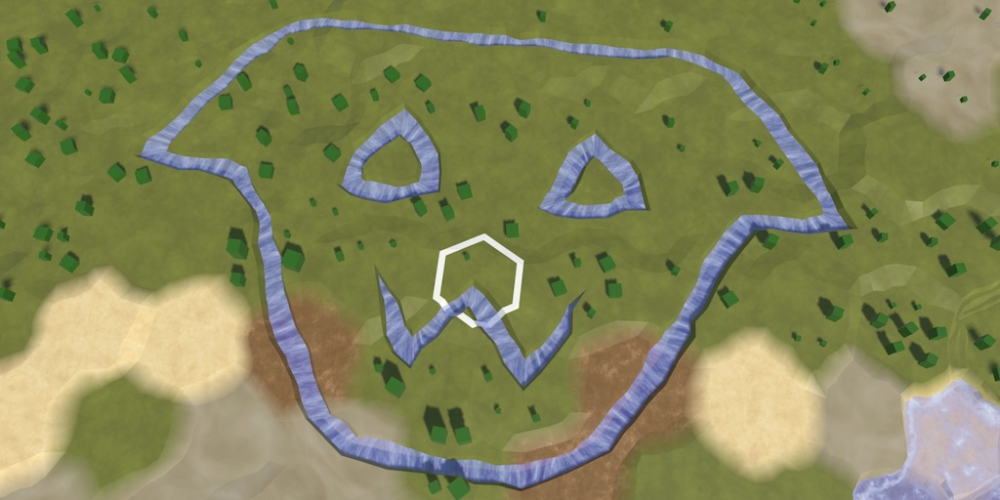
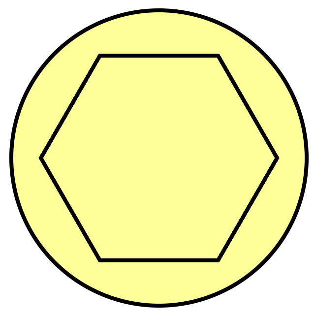

Hex Map 4.1.0
Better Dragging

This tutorial is made with Unity 6000.0.56f1 and follows Hex Map 4.0.0.
Using Hex Cells Again
This tutorial is a short one to improve the quality of life of the player. We are going to adjust the user experience when dragging while editing the map. But before we get to that we're going to transition some code back to using HexCell instead of cell indices, because it's now more convenient to use the struct.
We start with HexMapEditor, replacing its previous cell index field with a previous cell struct.
//int previousCellIndex = -1;HexCell previousCell;
Use the default cell value at the end of Update to clear the previous cell.
void Update()
{
…
previousCell = default;
}
Adjust HandleInput so it uses the struct logic when checking for validity, comparing, and setting the previous cell.
void HandleInput()
{
HexCell currentCell = GetCellUnderCursor();
if (currentCell)
{
if (previousCell && previousCell != currentCell)
{
ValidateDrag(currentCell);
}
else
{
isDrag = false;
}
EditCells(currentCell);
previousCell = currentCell;
}
else
{
previousCell = default;
}
UpdateCellHighlightData(currentCell);
}
We can now directly ask the cells for a neighbor in ValidateDrag, no longer having to go to the grid for that, as the cell does it for us.
void ValidateDrag(HexCell currentCell)
{
for (…)
{
if (previousCell.GetNeighbor(dragDirection) ==
currentCell)
{
isDrag = true;
return;
}
}
isDrag = false;
}
We'll also adjust HexGameUI in the same way, replacing its index field with a struct field.
int currentCellIndex = -1;HexCell currentCell;
Adjust DoSelection to use the cell directly.
void DoSelection()
{
grid.ClearPath();
UpdateCurrentCell();
if (currentCell)
{
selectedUnit = currentCell.Unit;
}
}
Likewise for DoPathfinding.
void DoPathfinding()
{
if (UpdateCurrentCell())
{
if (currentCell && selectedUnit.IsValidDestination(currentCell))
{
grid.FindPath(selectedUnit.Location, currentCell, selectedUnit);
}
else
{
grid.ClearPath();
}
}
}
And finally UpdateCurrentCell.
bool UpdateCurrentCell()
{
HexCell cell = grid.GetCell(
Camera.main.ScreenPointToRay(Input.mousePosition));
//int index = cell ? cell.Index : -1;
if (cell)
{
currentCell = cell;
return true;
}
return false;
}
Sticky Cell Dragging
Currently, when editing the map dragging can be jittery and hard to work with. This is especially obvious when drawing rivers. The river segments sometimes appear to suddenly reverse or jump in an unexpected direction.
This happens because we detect a drag and move to the next cell as soon as the cursor passes a cell boundary. This can be especially awkward and hard to control when working close to a zigzag cell boundary line. To alleviate this we'll make the currently selected cell sticky, meaning that it will stay selected while the cursor stays close enough to its center. Only when the cursor has moved far enough away will other cells be considered for selection.
Introduce a sticky factor constant to HexMetrics along with a sticky radius, which is the cell's outer radius scaled by this factor. Let's use 1.25 as the factor, for a reasonable sticky area.
public const float stickyRadius = outerRadius * stickyFactor; public const float stickyFactor = 1.25f;

Add a parameter for a sticky cell to the GetCell methods of HexGrid that have a ray or position parameter. Have the first pass its argument on to the latter. Give the parameters defaults so our existing code keeps working.
public HexCell GetCell(Ray ray, HexCell stickyCell = default)
{
if (Physics.Raycast(ray, out RaycastHit hit))
{
return GetCell(hit.point, stickyCell);
}
return default;
}
public HexCell GetCell(Vector3 position, HexCell stickyCell = default)
{
position = transform.InverseTransformPoint(position);
HexCoordinates coordinates = HexCoordinates.FromPosition(position);
return GetCell(coordinates);
}
Now adjust the GetCell method for a position so it takes the sticky radius into account. If there is a valid sticky cell we check if the XZ vector from the sticky cell to the given position is less than the stick radius. We only have to check the square XZ distance. If so, we return the sticky cell instead of retrieving the cell for the given position.
public HexCell GetCell(Vector3 position, HexCell stickyCell = default)
{
position = transform.InverseTransformPoint(position);
if (stickyCell)
{
Vector3 v = position - stickyCell.Position;
if (
v.x * v.x + v.z * v.z <
HexMetrics.stickyRadius * HexMetrics.stickyRadius)
{
return stickyCell;
}
}
HexCoordinates coordinates = HexCoordinates.FromPosition(position);
return GetCell(coordinates);
}
To enable this functionality add the previous cell as an extra argument when getting a cell in HexMapEditor.GetCellUnderCursor.
HexCell GetCellUnderCursor() => hexGrid.GetCell( Camera.main.ScreenPointToRay(Input.mousePosition), previousCell);
Editing cells, especially drawing rivers, is now a much better experience. The next tutorial is Hex Map 5.0.0.
license repository PDF